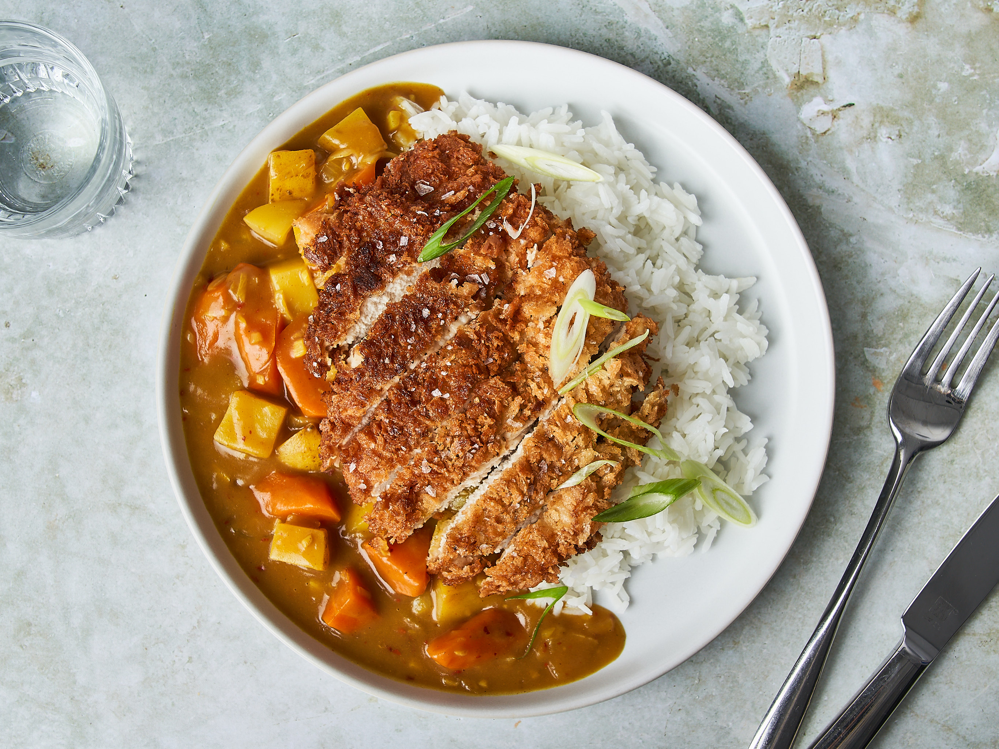

<=BACK
Japanese Katsu-Curry

Our unique recipe:
Crunchy on the outside, cozy on the inside — Katsu Curry is like a warm hug with a crispy high-five. Golden chicken meets rich, flavorful curry for the ultimate comfort meal!
Ingredients:
- 1 tablespoon vegetable oil
- 10-12 ounces white or yellow onion
- 1 clove garlic (minced)
- 1 tablespoon tomato paste
- 1 teaspoon Worcestershire sauce (optional)
- tablespoons curry powder (such as madras curry powder)
- 1 teaspoon salt
- 1 teaspoon sugar
- 8 ounces russet or yukon gold potato
- 8 ounces carrots
- 2 cups chicken stock
- 1 tablespoon cornstarch
- 1 tablespoon salted butter
- 2 pounds boneless skinless chicken breast
- salt and pepper
- 2 tablespoons all purpose flour
- 1 egg
- 1/3 cups panko breadcrumbs
- vegetable oil (for frying)
- 6 cups steamed short grain Japanese rice such as koshihikari
Steps:
- Heat a Dutch oven or other medium to large pot over medium heat. Add the 1 tablespoon oil and the onion, and cook until the onions begin to turn translucent and the edges begin to brown, about 2-3 minutes.
- Add the garlic, tomato paste, and Worcestershire sauce (if using), and cook until fragrant, 1 minute. Then stir in the curry powder, salt, and sugar, and cook for 1 minute.
- Stir in the potatoes, carrots, and chicken stock. Bring to a simmer, cover, and cook until the potatoes and carrots are tender, about 20-25 minutes.
- Meanwhile, butterfly the chicken breast so they’re thin and even. If the chicken is uneven, you can pound it to an even thickness. Pat the chicken dry with a paper towel. Season both sides of the chicken pieces with salt and pepper, and dust with a light, even coating of flour. In one shallow bowl, beat the egg. Put the panko breadcrumbs into another shallow bowl.
- Add a thin, even layer of oil to a cast iron pan or nonstick skillet over medium heat. The oil is ready when you throw a panko breadcrumb into the oil and it sizzles. Dip the chicken into the egg to coat. Transfer to the panko and press it evenly into the chicken to get a good coating.
- You’ll need to cook the chicken in a couple batches. Carefully lay the chicken in the hot oil and cook for 6 minutes on one side, until golden brown. Flip and cook the other side for another 5-6 minutes. Transfer to a plate and repeat with the remaining chicken, adding oil to the pan as needed.
- Stir the cornstarch with the water to make a slurry, and add it to the curry sauce. Stir until the sauce is thickened, then stir in the butter. Taste for seasoning and add additional salt to taste if needed.
- Slice the chicken, and place over the steamed rice. Ladle the curry sauce on the side.
Enjoy!